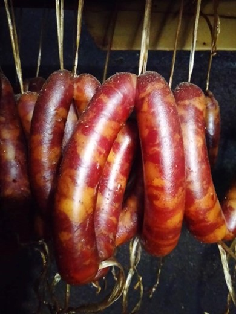
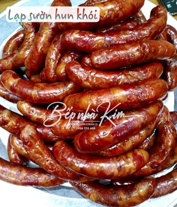
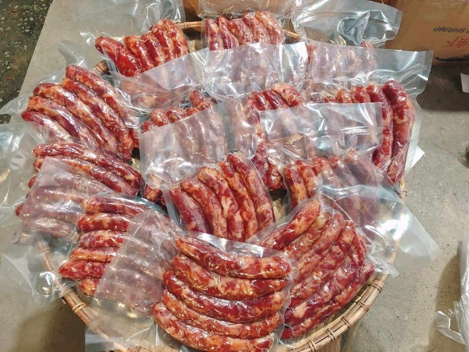
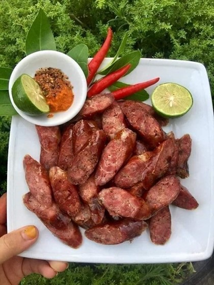

Lạp sườn
Lạp sườn là món ăn truyền thống lâu đời của người Cao Bằng, một món ăn được hòa quyện bởi mùi thơm của nắng vùng cao, mùi thoảng thơm của mía, vị thơm, ngọt của thịt. Tất cả những hương vị ấy được gửi trọn trong món lạp sườn Cao Bằng khiến ai đã một lần thưởng thức đều thật khó quên.
Cái ngon của lạp sườn Cao Bằng là mảnh đất vùng cao, nơi chăn nuôi lợn khá rộng rãi, tự do, thức ăn mang chất đất vùng cao khiến lợn Cao Bằng có điểm riêng biệt khác hẳn nuôi ở vùng đồng bằng. Ngoài ra nguồn nước đặc trưng khiến vật nuôi lấy thịt và rượu có hương vị tuyệt vời cùng với một số gia vị, có thể nói là bí quyết của ẩm thực Cao Bằng.
Cách chế biến món lạp sườn Cao Bằng rất công phu, trải qua nhiều công đoạn. Việc đầu tiên tiên là lòng lợn (lòng non) được rửa sạch nhiều lần bằng nước muối loãng, sau đó là rửa bằng rượu, lòng lợn sẽ được phơi khô rồi thổi hơi vào khiến lòng lợn rãn ra thành bong bóng, để làm vỏ bọc bên ngoài lạp sườn. Nhân lạp sườn được làm bằng thịt thăn, thịt vai hoặc thịt mông lợn. Để lạp sườn ngon, khâu chọn thịt nhân rất quan trọng. Thịt phải có màu đỏ thẫm, mỡ trắng trong, bóng, bì mỏng và một màu.
Thịt được chọn từ lúc còn nóng (lợn vừa mổ) rượu mai quế lộ, rượu trắng và một chút muối diêm, đây là những nguyên liệu khá cần thiết để đảm bảo độ hồng tươi của thịt cũng như giữ cho màu sắc lạp sườn được tươi ngon và hấp dẫn hơn rất nhiều. Sau đó thịt được thái miếng nhỏ và tẩm ướp gia vị, cùng chút rượu để làm chất lên men, rồi nhồi vào lòng non và thành lạp sườn, tiếp theo là phơi khô khoảng ba nắng rồi treo lên nóc bếp, khói và hơi nóng của bếp lửa đun bằng bã mía làm cho miếng thịt săn hơn và ngon hơn. Sau đó lạp sườn sẽ săn lại và có màu đỏ hồng nhẹ khá hấp dẫn. Lạp sườn đóng gói hút chân không đảm bảo vệ sinh an toàn thực phẩm.
